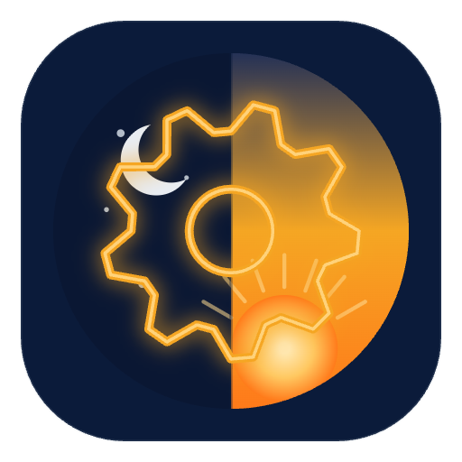

Production-grade AI automation, observable by design.
Three independent n8n + Claude workflows — every LLM call logged, every webhook signed, every output validated.
HMAC-signed lead in → Claude scores fit, intent, urgency → Slack alert for qualified leads → logged to Postgres. Forged signature → clean 401.
RSS at 09:00, deduped by GUID → Opus critic selects and summarizes the few items that matter → posted to Slack, archived to Postgres.
Poll inbox → Claude classifies into sales / support / recruiting / billing / other → routes each to its own Slack channel → logged.